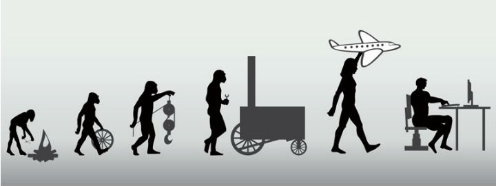
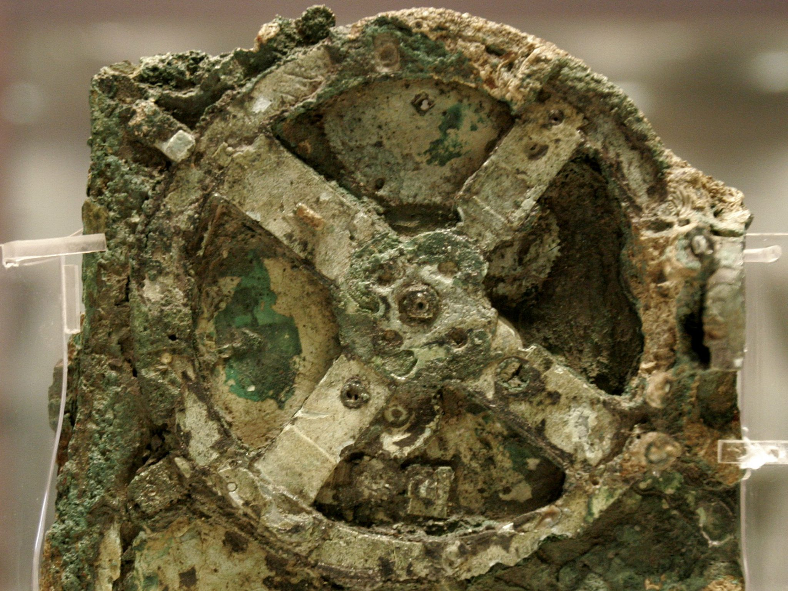
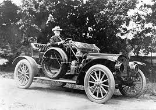

Technology is the application of scientific knowledge to the practical aims of human life or, as it is
sometimes phrased, to the change and manipulation
of the human environment.
is the application of knowledge for achieving practical goals in a reproducible way. The word technology
can also mean the products resulting from such
efforts, including both tangible tools such as utensils or machines, and intangible ones such as software.
Technology plays a critical role in science,
engineering, and everyday life.
Technology is a term dating back to the early 17th century that meant 'systematic treatment'. It is predated in use by the Ancient Greek , used to
mean 'knowledge of how to make things', which encompassed activities like architecture.

Starting in the 19th century, continental Europeans started using the terms Technik (German) or technique (French) to refer to a 'way of doing'
, which
included all technical arts, such as dancing, navigation, or printing, whether or not they required tools or instruments. At the time,
Technologie (German and French)
referred either to the academic discipline studying the "methods of arts and crafts", or to the political discipline "intended to legislate
on the
functions of the arts and crafts."Since the distinction between Technik and Technologie is absent in English, both were translated as
technology. The
term was previously uncommon in English and mostly referred to the academic discipline, as in the Massachusetts Institute of Technology.
In the 20th century, as a result of scientific progress and the Second Industrial Revolution, technology stopped being considered a distinct academic
discipline
and took on its current-day meaning: the systemic use of knowledge to practical ends.
After harnessing fire, humans discovered other forms of energy. The earliest known use of wind power is the sailing ship; the earliest

record of a ship under sail is that of a Nile boat dating to around 7,000 BCE.From prehistoric times, Egyptians likely used the power of
the annual flooding of the Nile to irrigate their lands, gradually learning to regulate much of it through purposely built irrigation
channels and "catch" basins.The ancient Sumerians in Mesopotamia used a complex system of canals and levees to divert water from the Tigris
and Euphrates rivers for irrigation.The ancient Romans also had a complex system of aqueducts, which were used to transport water across long
distances.The first Roman aqueduct was built in 312 BCE.The eleventh and final ancient Roman aqueduct was built in 226 CE. Put together, the
Roman aqueducts extended over 450 km, but less than 70 km of this was above ground and supported by arches.

Innovations continued through the Middle Ages with the introduction of silk production (in Asia and later Europe), the horse collar, and
horseshoes.
Simple machines (such as the lever, the screw, and the pulley) were combined into more complicated tools, such as the wheelbarrow,
windmills, and clocks. A system of universities developed and spread scientific ideas and practices, including Oxford and Cambridge.
Starting in the United Kingdom in the 18th century, the discovery of steam power set off the Industrial Revolution, which saw wide-ranging
technological discoveries, particularly in the areas of agriculture, manufacturing, mining, metallurgy, and transport, and the widespread
application of the factory system.The 20th century brought a host of innovations. In physics, the discovery of nuclear fission in the Atomic Age
led to both nuclear weapons and nuclear power. Computers were invented and later shifted from analog to digital in the Digital Revolution.
Information technology, particularly optical fiber and optical amplifiers led to the birth of the Internet, which ushered in the Information Age.
The Space Age began with the launch of Sputnik 1 in 1957, and later the launch of crewed missions to the moon in the 1960s. Organized efforts to
search for extraterrestrial intelligence have used radio telescopes to detect signs of technology use, or technosignatures, given off by alien
civilizations. In medicine, new technologies were developed for diagnosis (CT, PET, and MRI scanning), treatment (like the dialysis machine,
defibrillator, pacemaker, and a wide array of new pharmaceutical drugs), and research (like interferon cloning and DNA microarrays).
Here are six different categories of technology with examples for each: